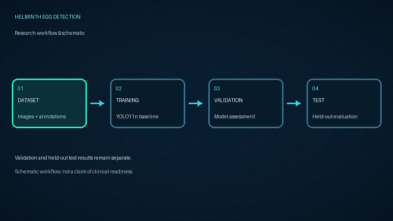
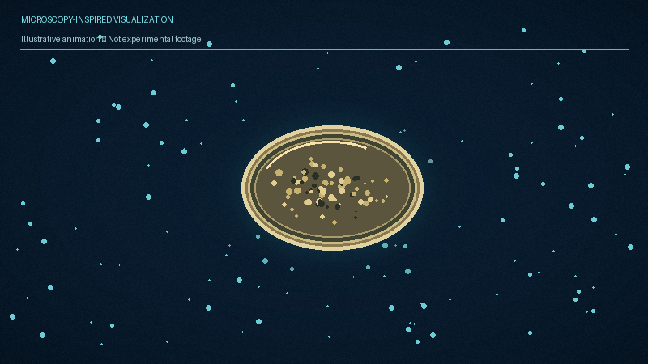

YOLO11n
A lightweight object-detection model used as the baseline for this project.
Exploring YOLO11n for four-class helminth egg detection in microscopy images. A research project focused on object detection, reproducible evaluation, and transparent scientific reporting.
Four classes, a lightweight detector, and a documented evaluation workflow.
A lightweight object-detection model used as the baseline for this project.
Images across training, validation and test splits in the recorded dataset.
Four annotated helminth egg categories included in the experiment.
Project visuals for the workflow, microscopy-inspired motion, and detection concepts.

Dataset → training → validation → held-out test.

An illustrative, microscopy-inspired visual.
A visual explanation of detection-style overlays.
Recorded rerun metrics, reported separately for validation and the held-out test split.
mAP@50
mAP@50:95 — 69.08%
mAP@50
mAP@50:95 — 55.16%
Test images
147 annotated object instances.
| Split | Precision | Recall | mAP@50 | mAP@50:95 |
|---|---|---|---|---|
| Validation rerun | 89.06% | 77.08% | 87.79% | 69.08% |
| Test rerun | 76.20% | 63.89% | 72.15% | 55.16% |
Recorded image counts and the four-class mapping used in the project.
| Split | Images | Annotated instances |
|---|---|---|
| Training | 280 | 548 |
| Validation | 60 | 114 |
| Test | 60 | 147 |
| Total | 400 | 809 |
| Class ID | Dataset label | Organism / category |
|---|---|---|
| 0 | ASC. | Ascaris lumbricoides |
| 1 | HKW. | Hookworm |
| 2 | SCH. | Schistosoma mansoni |
| 3 | TRI. | Trichuris trichiura |
Core equations used to understand object-detection evaluation.
Measures the overlap between a predicted bounding box and its ground-truth box.
The fraction of predicted detections that are true positives under the matching protocol.
The fraction of ground-truth objects detected under the matching protocol.
The mean of average precision across C classes at a specified IoU evaluation setting.
A minimal example for using an existing checkpoint with Ultralytics.
from ultralytics import YOLO
# Load the existing trained checkpoint
model = YOLO("models/best.pt")
# Run detection on a microscopy image
results = model.predict(
source="path/to/microscopy_image.jpg",
imgsz=320,
save=True
)
# Inspect predicted boxes
for result in results:
for box in result.boxes:
class_id = int(box.cls[0])
confidence = float(box.conf[0])
xyxy = box.xyxy[0].tolist()
print({
"class_id": class_id,
"confidence": round(confidence, 4),
"box_xyxy": xyxy
})Run in a compatible Python environment with Ultralytics installed and the checkpoint present at the specified path. This example is illustrative and does not imply a particular prediction or confidence value.
Clear boundaries are essential to responsible scientific communication.
Persistent links to the dataset record, related publication and source repository.
Dataset record associated with this project.
Open dataset DOI ↗Related research publication referenced by the project.
Read publication ↗Project code, documentation and available research assets.
Explore repository ↗